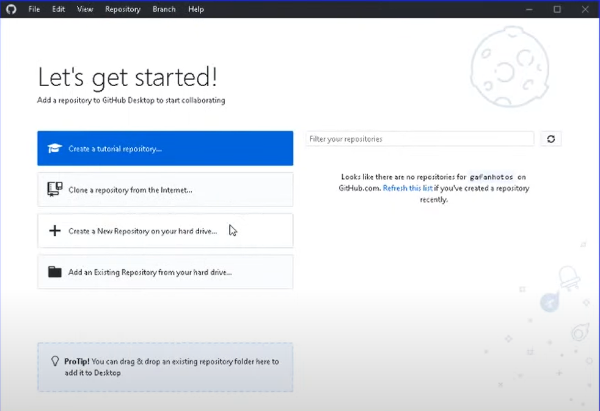
Na tela inicial do GitHub Desktop clique em: Create a New Repository
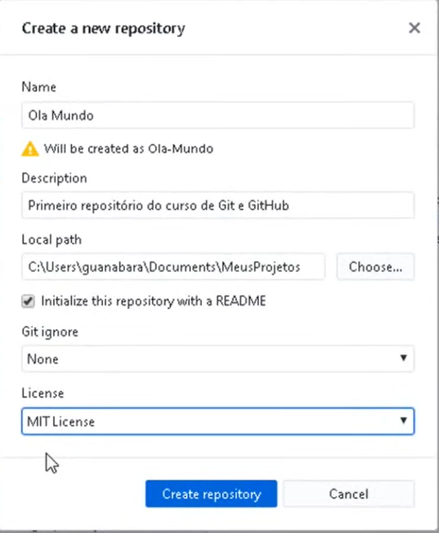
Name - o nome do seu projeto Description - Descrição do seu projeto Local path - Pasta onde será arquivado README - Deixe sempre marcado o README Git ignore - Deixe none, falaremos mais em outro momento License - Vamos escolher sempre IMT License.
Acabamos de criar nosso REPOSITÓRIO LOCAL.
Obs: é importante que você organize uma pasta do repositório e dentro dela coloque todos os seus projeto. Organização é fundamental para um programador!
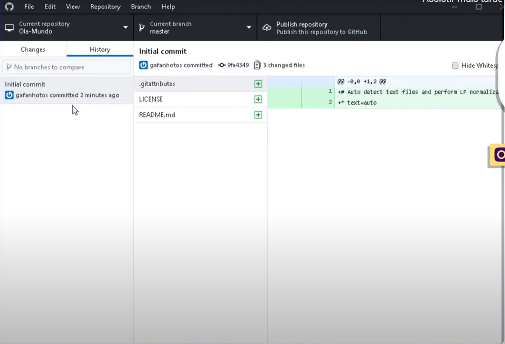
Na aba History é possível ver os commits que o programa dá automaticamente.
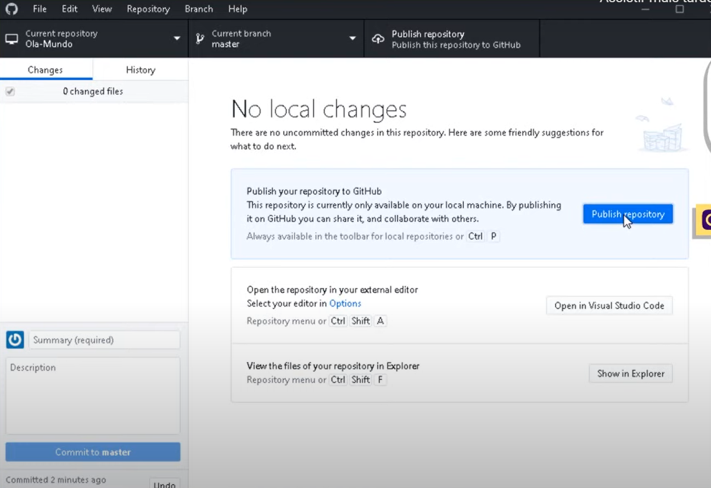
Para criar subir nosso projeto para Núvem, ou seja REPOSITÓRIO REMOTO, precisamos clicar em Publish Repository
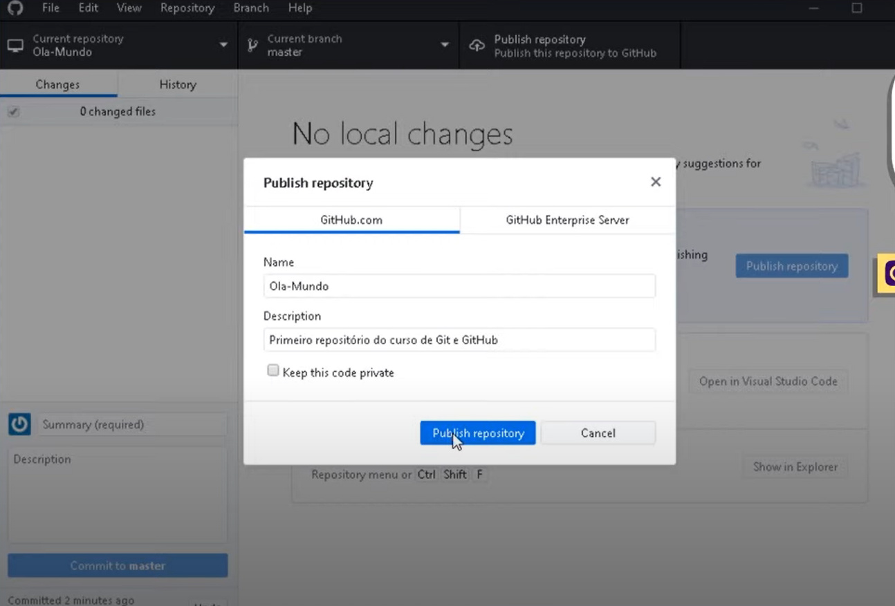
A primeira vez que subir um projeto vai aparecer uma aba de configuração. Nela vamos deixar nosso nome e descrição padrão e vamos desmarcar Keep the code private, para deixar nosso código aberto ao público.
Pronto, criamos nosso repositório local, integrado ao repositório remoto.
Criamos nosso projeto e já subimos ele para núvem.
Versionamento Local e Remoto
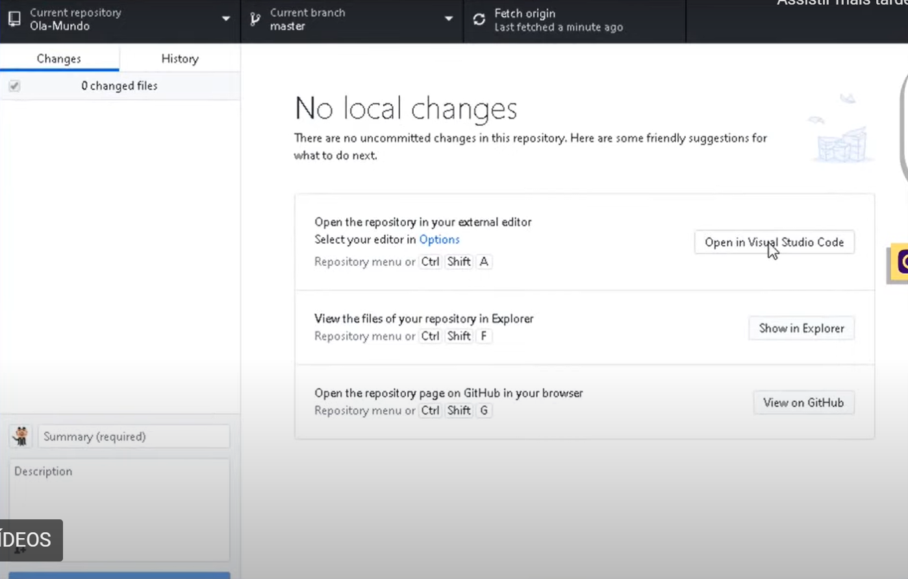
Graças a integração do GitHub Desktop e Visual Studio Code, podemos abrir nosso repositório local apenas clicando em Open in VSC
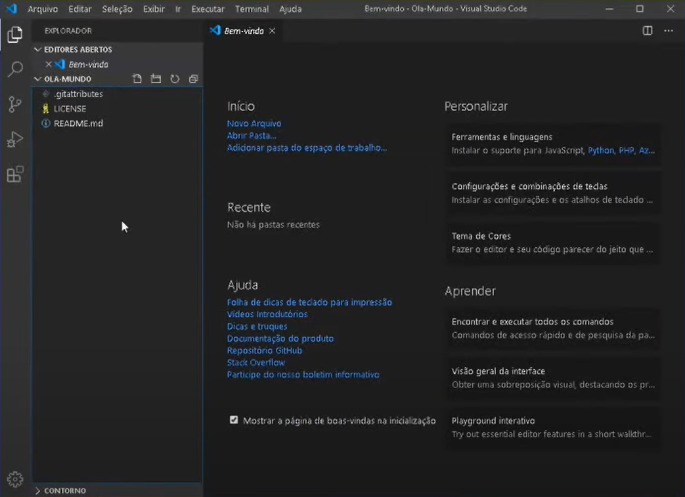
Na parte esqueda do VSC temos nosso repositório local com todos os arquivos
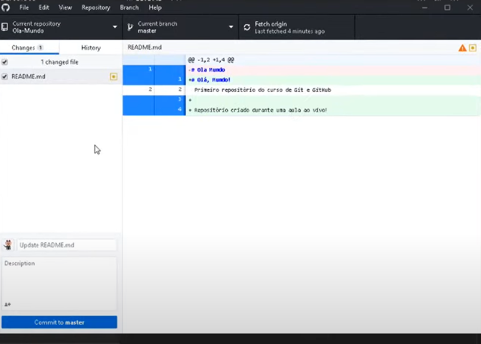
O VSC já prepara um commit sempre que alteramos algum arquivo. Então basta conferir as alterações e clicar em Commit to Master na parte inferior esquerda.
Desta forma criamos um Versionamento no Repositório Local.
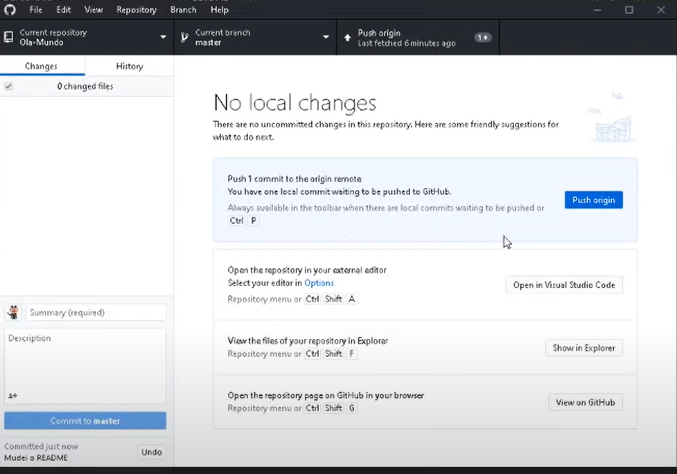
Para subir nossas alterações na núvem, ou seja, no Repositório Remoto, basta clicar em Push Origin. Pronto, já temos nosso versionamento local e remoto.
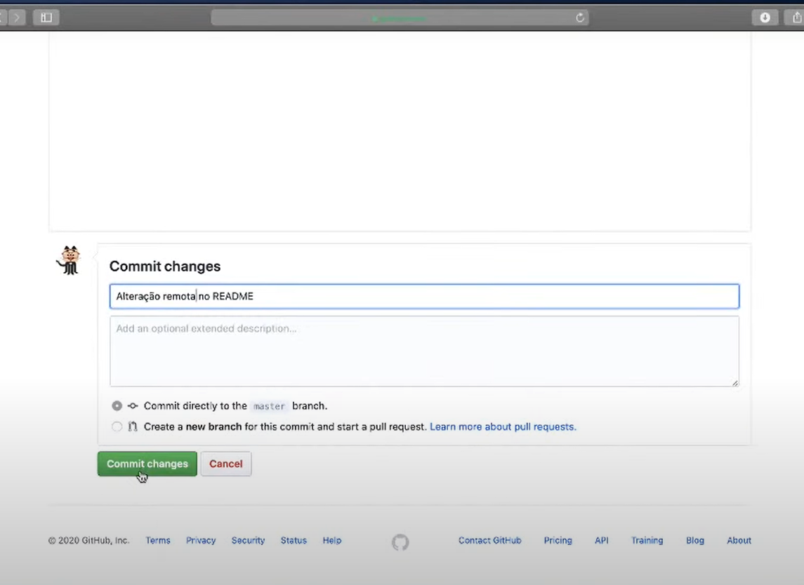
Também é possível fazer alterações direto no seu perfil do GitHub Web com o editor próprio deles. Neste caso também precisamos dar um Commit no final da alteração.
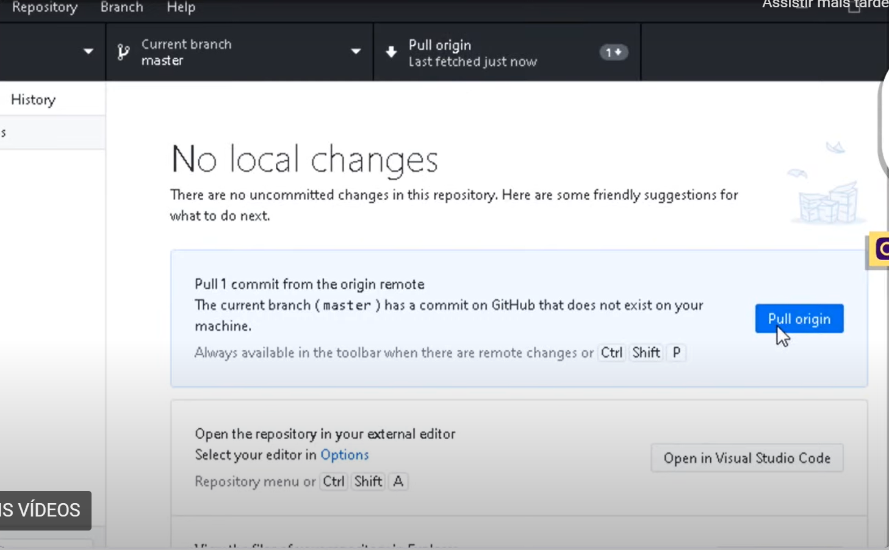
Por fim, diferente da alteração local em que damos push pro remoto, agora vamos dar um pull da alteração remota para o local.
Versionando projetos antigos
Você vai básicamente fazer o mesmo processo de criar o repositório local e dar um push pro repositório remoto. Com 1 único detalhe.
Primeiro você cria uma repositório vazio e em seguida arrasta os documentos do seu projeto para dentro da pasta versionada. Agora basta commitar e dar um push. E pronto, projeto antigo versionado!